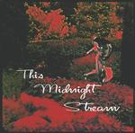

| Artist: | Rick Ray |
| Title: | Clone Man |
| Label: | Neurosis Records |
| Length(s): | 69 minutes |
| Year(s) of release: | 1999 |
| Month of review: | 07/2000 |
| 1) | Are We Ready | 4.18 |
| 2) | Scream | 7.31 |
| 3) | Almost Beyond Repair | 5.45 |
| 4) | The Exterminator | 4.52 |
| 5) | Sands Of Time | 4.45 |
| 6) | My Chair | 4.11 |
| 7) | Front Seat In Hell | 4.00 |
| 8) | Tell Me Where | 4.52 |
| 9) | Clone Man | 4.54 |
| 10) | Divided We Fall | 7.29 |
| 11) | Can't Escape | 4.27 |
| 12) | The Chase, The Race, The Place | 3.36 |
| 13) | The Fire And The Flame | 4.06 |
| 14) | The Fictitious Man | 4.16 |
I like the drawing of Ray on the back more than the Clone Man on the front. Would fit the album quite well I think. The one on the front is harder to take seriously.